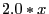

Next: tupledict() Up: Python API Details Previous: tuplelist.__contains__()
Gurobi tuple dict. This is a sub-class of the Python dict
class that is designed to efficiently support a usage pattern that is
quite common when building optimization models. In particular, a
tupledict is a Python dict where the keys are stored as
a Gurobi tuplelist, and where
the values are typically Gurobi Var
objects. Objects of this class make it easier to build linear
expressions on sets of Gurobi variables, using
tuplelist.select()
syntax and semantics.
You typically build a tupledict by calling
Model.addVars. Once you've
created a tupledict d, you can use d.sum() to
create a linear expression that
captures the sum of the variables in the tupledict. You can
also use a command like d.sum(1, '*', 5) to create a sum over a
subset of the variables in d. Assuming the keys for the
tupledict are tuples containing three fields, this statement
would create a linear expression that captures the sum over all
variables in d whose keys contain a 1 in the first field of the
tuple and a 5 in the third field (the '*' character is a
wildcard that indicates that any value is acceptable in that field).
You can also use d.prod(coeff) to create a linear expression
where the coefficients are pulled from the argument dict. For
example, if d(1,2,5) contains variable x and
coeff(1,2,5) is 2.0, then the resulting expression would
include term .
To access the members of a tupledict, you can use standard dict
indexing. For example, d[1,2] returns the value associated
with tuple (1,2).
Note that a tupledict key must be a tuple of scalar values
(int, float, string, ...). Thus, you can use
(1, 2.0, 'abc') as a key, but you can't use
((1, 2.0), 'abc').
Note that tupledict objects build and maintain a set of
internal data structures to support efficient select
operations. If you wish to reclaim the storage associated with these
data structures, you can call the
clean function.